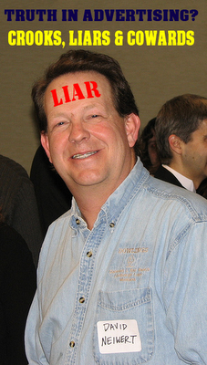

Dr. Thomas Young wrote to Adams reporting that, upon the news that the British had seized a supply of colonial gunpowder from Charlestown, tens of thousands of colonists had taken up arms and marched in that direction, from as far away as Connecticut. Samuel Adams replied to him, "I have written to our friends to provide themselves without delay with Arms & Ammunition, get well instructed in the military Art, embody themselves & prepare a complete set of rules that they may be ready in Case they are called to defend themselves against the violent attacks of Despotism." -- Samuel Adams, A Life by Ira Stoll, p. 137.
Tuesday, November 30, 2010
Sam Adams at the time of the Powder Alarm, 1774. "I have written to our friends to provide themselves without delay with Arms & Ammunition."
Free Brian Aitken. Clemency for bovine blowjobs but not handguns transported legally. Only in New Jersey.

A Jersey Cow: "Give Officer Too Friendly a big kiss, Bessie."
New Jersey man serving 7 years for guns he owned legally I liked this part of this sorry story.
A few weeks after Aitken's trial over the summer, Morley learned that Christie was not going to reappoint him, due in part to a 2009 case in which he dismissed animal-cruelty charges against a Moorestown cop accused of sticking his penis into the mouths of five calves. Morley said there was no way of knowing whether the calves had been "puzzled" or "tormented" by the officer's actions.
Nappen thinks the animal-cruelty case exemplifies poor decision-making by Morley.
"Brian didn't receive oral sex from calves; he only lawfully possessed firearms," Nappen said.
A spokesman for Christie acknowledged that his office had received clemency requests for Aitken, but declined to comment further.
Just in case you missed it . . .
Be sure and go back to read my Open Letter to Andrew Traver from Friday which has been edited to reflect a more perfect understanding of the beginning of the R.A. Bear story. Also be sure and re-read yesterday's "The True Story of the Life of 'R.A. Bear': Inception & impregnation into the minds of the ATF via a highly placed snitch named Dan Shea of the NFATCA." It too was edited after input from close family members of R.A. Bear.
Former Appropriations Subcommittee Chairman Jim Lightfoot urges ATF oversight hearings

Received this email last night from CPT Jonathan Tuttle. Please draw the attention of your Senators and Congresscritters to it.
To locate, go to http://www.nfaoa.org/resources.html then to the section entitled LETTERS BY MEMBERS OF CONGRESS REGARDING ATF MISMANAGEMENT. Click on the "+" symbol and the section will open; the letter and a writeup about it are is the first item.
Former Appropriations Subcommittee Chairman Jim Lightfoot urges ATF oversight hearings
In a letter dated November 20, 2010, former Rep. Jim Lightfoot (R-Iowa) welcomed incoming freshmen to the House of Representatives (click here to read it), and urged them to support ATF oversight hearings.
As a former Chairman of the House Subcommittee on Treasury, Postal Service and General Government, Committee on Appropriations, Rep. Lightfoot had responsibility for approving ATF's budget and gained insights into ATF operations. At one Subcommittee hearing in 1996, Rep. Lightfoot heard testimony about issues regarding ATF's classifications of certain AOWs as Curio & Relic firearms (click here to read it); it was the first detailed testimony before the Congress about any NFA Curios & Relic firearms since the NFA was amended under Title II of the Gun Control Act of 1968, effective November 1, 1968.
In his November 20, 2010, letter, Rep. Lightfoot urged incoming freshman members:
"[G]overnment agencies all suffer from the 'Blackbird Syndrome.' That's where several hundred Blackbired as sitting on a telephone wire and then suddenly one of them takes off. No one knows where that one bird is headed but the entire flock takes off behind him.
Agencies work the same way. They watch each other like a Hawk (Blackbird).
Pick one or two agencies for the 'Mr. Clean' treatment. Go after them in high profile. You will be surprised how many other agencies will start to clean up their acts.
The Bureau of Alcohol, Tobacco, Firearms and Explosives (ATF) would be a good place to start. It is one of the smaller agencies, therefore completing the audits and investigations will take less time. It is an agency that has drifted for nearly 6 years without a permanent Director.
ATF was recently featured on CNN regarding an agent who blew the whistle on an illegal wiretap and was rewarded wtih exile to an office with nothing to do for two years.
One of their Special Agents in Charge (SAC) was found by a local reporter to be driving a brand new Cadillas with all the bells and whistles plus a police package. His punishment was to move him to DC Headquarters with a promotion.
Check the millions of dollars paid out in settlements to employees as well as the huge backlog of employee complaints being ignored. Compare this to other larger agencies and you will be shocked at the level of abuse and waste.
Bottom line, it is your responsibility and obligation to make these agencies accoutable to yoy and, by extension through yu, to me the taxpayer.
Demanding accountability is where you can make the biggest difference in the shortest amount of time.
It hasn't been done for years. Focus and cut, change Washington not the other way around."
Rep. Lightfoot has other advice -- "Just because an agency head is sitting across from you in a hearing room do not assume he/she is always telling the truth. As Ronald Reagan once said, 'trust, but verify.'"
Monday, November 29, 2010
The True Story of the Life of "R.A. Bear": Inception & impregnation into the minds of the ATF via a highly placed snitch named Dan Shea of the NFATCA.
Dan Shea and John Brown at an early age.
Long-time readers of Sipsey Street will recall Dan Shea's first appearance in these pages. At the time I dubbed him a "Useful Jew" along the lines of the Lodz Ghetto's Chaim Rumkowski, for using his pulpit at Small Arms Review to make statements like:
Now that Shea has been identified as the ATF snitch who first introduced R.A. Bear into the minds of the ATF Chief Counsel's Office and since NFATCA is back in the news as doing us all a favor making a back room deal with ATF and other entities on large-caliber ammunition (see David's column linked below), the cockroach spokesmen are popping up to defend their fellow photo-phobes.
In comments at David Codrea's Examiner column and here at Sipsey Street, The Dan Shea/John Brown/NFATCA/ATF Anti-Defamation League writing either anonymously or under the Frank Herbertian nom d'guerre of "kwisatz" attempts to defend the indefensible. Here's the one he posted at Sipsey Street:
Now, for the uninitiated, here are the players and names:
Bowers: Principal moderator/owner of subguns.com, a machine gun collector and enthusiast website, with a reluctance to take on the ATF and an over-active delete key.
John Brown: Friend of Dan Shea and President of NFATCA, the NFA Trade and Collectors Association (the machine gun equivalent of the NRA).
EPS: Inside ATF speak for the Enforcement Programs and Services Directorate. Since May 2010, Arthur Herbert has been the Assistant Director for EPS.
Dan Shea: NFATCA big wig, owner of Long Mountain Outfitters and Small Arms Review, as well as an ATF snitch with a symbiotic relationship with the agency, who apparently both dispensed and received information.
Now, "Anonymous" is correct when in an earlier post, I characterized Shea in a typo as "president" of NFATCA when I meant to say "de facto president." I later corrected it. Brown is President of the NFATCA, but he and Shea have, until recently, been joined at the hip -- the Bobsey Twins of the NFATCA "go-along, get-along" ATF friendly leadership.
I now know that I also made an error about the inception of R.A. Bear in my open letter to Andy Traver. Here is what I told him last Friday on the blog and in email:
The error I made, however, actually gave Shea more credit than he deserved. Here is the more accurate story of the inception of R.A. Bear and the impregnation of that fertilized fictional ovum into the brains of the malevolent morons of the ATF Chief Counsel's Office. We begin by deconstructing the problematic portion of the paragraph above:
MBV: This part is true. (Although "defy" is way the ATF CCO looked at it, his actual sin in their eyes was to be an effective expert witness for the defense.)
MBV: This part is also true.
MBV: This part is not true. The truth, for one E. Daniel Shea, is even more damning. For it is Dan Shea, and Dan Shea alone, who first gave the suggestion of corporeal form to the stuffed child's toy as ATF "person of interest."
The story starts innocently enough years before, when a man we will call The Author needed a second phone. In his own words here is The Unlikely Story of Ramsey Bear.
 Earliest known photo of ATF "Person of Interest" R. A. Bear.
Earliest known photo of ATF "Person of Interest" R. A. Bear.
The point is, how did ATF come to be interested in R.A. Bear enough to begin asking about him in depositions regarding Len Savage? How did this morph from a personal matter with Shea to an agency investigation of a stuffed child's toy?
What follows is what can be discerned from court papers filed in Nevada as well as ATF emails revealed as part of discovery in another case. About the same time as the Shea/Author controversy began, the ATF was very upset at Georgia firearms designer Lennis "Len" Savage for testifying against them as an expert witness in the Olofson case and others.
Perhaps not so coincidentally, at the same time Dan Shea announced that Small Arms Review would no longer accept articles by or about Len Savage (Shea later gave this account himself under oath).
Thus there appears to be an identity and confluence of interests -- political, economic and bureaucratic -- ATF wished to remove the "poisonous weasel" Len Savage from competition in federal court; Dan Shea had his own reasons, founded upon, by his own words and actions, an animus towards Len Savage.
Meanwhile, and not coincidentally in this writer's opinion, in what has now become known as "The Case of the Arrested Gun," the ATF seized a firearms component -- an upper designed by Savage -- in furtherance of an "economic Waco" in order to force him out of business and out of federal court and his status as an expert witness. This campaign was almost entirely driven by the malevolent morons in the Chief Counsel's Office.
However, as a result of that case and internal ATF emails provided under discovery, we know more than a little about the symbiotic relationship between certain NFATCA board members and the ATF at the highest levels, including Shea and his Bobbsey Twin John Brown. For example, Brown forwarded emails that Len Savage had sent to him privately on to the ATF IN THE MIDDLE OF THE ATF'S LITIGATION OVER THE "ARRESTED GUN."
It was as part of the ATF's search for anything to use against Savage and Shea's adoption of their anti-Savage cause, that Shea provided the name R.A. Bear. Now this could have been a cynical attempt by Shea to use the ATF's investigatory power to help him go after The Author, or it could have been ATF pressuring Shea -- who is rumored to have his own legal difficulties with the ATF, the usual pattern for ATF informant recruitment -- to give them something, anything, on Savage and his friends.
Once it became clear, through other means and venues, that the ATF had an intense interest in the whereabouts of one R.A. Bear and his relationship to Len Savage, the chase was on. In effect, Dan Shea gave the ATF a name to chase, but some of us members of the Coalition of the Willing Lilliputians fleshed out the phantom and gave him real form. And boy did they ever chase him.
The bare bones of this story initially came to me after I contacted Len for help with technical aspects of Absolved, although the story I gleaned was both absent names and incorrect in some details and later interpretation. The fault for that error is all mine, not that it exculpates Shea in any way. Quite the opposite.
The rest, as they say, is history, or at least it will be as soon as R.A. Bear "testifies" at a congressional hearing about "economic Wacos" to the utter discredit of Dan Shea, John Brown, the NFATCA and the ATF.
Fortunately, I was able to pull my bad copy of the letter to Andy Traver out of the mail before it left this morning, so I will be editing it to reflect this more perfect understanding of how Dan Shea, ATF informant, sandbagged that agency with the willing and eager assistance of the malevolent morons of the ATF Chief Counsel's Office.
The only mystery now is how will the net trolls of the NFATCA/ATF Anti-Defamation League explain this one.
Mike Vanderboegh
III

Long-time readers of Sipsey Street will recall Dan Shea's first appearance in these pages. At the time I dubbed him a "Useful Jew" along the lines of the Lodz Ghetto's Chaim Rumkowski, for using his pulpit at Small Arms Review to make statements like:
There are a few misguided crusaders on the pro-gun side who cross the line; probably the most dangerous people there are to us because they will sacrifice anyone and anything to their generally misguided and usually self-serving agendas. Up in the mountains, we used to have a self-mocking saying. "Hey, Elmer, why don't you go poke that stupid old bear over there with a stick. Stupid old bear." The problem here is that all of the rest of us are are near that bear too. One has to wonder how much damage has been done by this very small group of "true believers" who have attacked the general employees of ATF instead of trying to effect true change in policy, regulation or law. Generally, their arguments are poorly thought out and rely on parsing words, instead of reading the laws as written and working within that as well as the existing political structure to effect real, solid changes. We need good, solid well thought out negotiation and proper legal and legislative remedies to address our issues. Join the NFATCA and help.
Now that Shea has been identified as the ATF snitch who first introduced R.A. Bear into the minds of the ATF Chief Counsel's Office and since NFATCA is back in the news as doing us all a favor making a back room deal with ATF and other entities on large-caliber ammunition (see David's column linked below), the cockroach spokesmen are popping up to defend their fellow photo-phobes.
In comments at David Codrea's Examiner column and here at Sipsey Street, The Dan Shea/John Brown/NFATCA/ATF Anti-Defamation League writing either anonymously or under the Frank Herbertian nom d'guerre of "kwisatz" attempts to defend the indefensible. Here's the one he posted at Sipsey Street:
Anonymous said...
Thanks for confirming what I already suspected. You have no idea what you are talking about. That's just fine. You wrote that Dan Shea was the president and were wrong. What else have you wrote about him that is wrong?
As for the 'public" being "invited" to this meeting let's be very clear. EPS was trying to get this shoved through without any scrutiny of any kind. NRA was unaware, NSSF, SAAMI, Safari and all the others were totally in the dark. NFATCA pulled of the emergency meeting with a week of notice and got the brakes put on a monumental cluster in the making. That very much benefits the public in my mind.
What specific ideas and concepts did you want advanced at this meeting? I'd like to know. Somehow I think that you are going to say that the ATF should be abolished. That may be very true but it is not a viable component of this meeting. So what did you want advanced?
And as far as the whole Dan shea thing, dude, you give him wayyy to much credit. Bowers supporting ATF and NFATCA, what a hoot!
Now, for the uninitiated, here are the players and names:
Bowers: Principal moderator/owner of subguns.com, a machine gun collector and enthusiast website, with a reluctance to take on the ATF and an over-active delete key.
John Brown: Friend of Dan Shea and President of NFATCA, the NFA Trade and Collectors Association (the machine gun equivalent of the NRA).
EPS: Inside ATF speak for the Enforcement Programs and Services Directorate. Since May 2010, Arthur Herbert has been the Assistant Director for EPS.
Dan Shea: NFATCA big wig, owner of Long Mountain Outfitters and Small Arms Review, as well as an ATF snitch with a symbiotic relationship with the agency, who apparently both dispensed and received information.
Now, "Anonymous" is correct when in an earlier post, I characterized Shea in a typo as "president" of NFATCA when I meant to say "de facto president." I later corrected it. Brown is President of the NFATCA, but he and Shea have, until recently, been joined at the hip -- the Bobsey Twins of the NFATCA "go-along, get-along" ATF friendly leadership.
I now know that I also made an error about the inception of R.A. Bear in my open letter to Andy Traver. Here is what I told him last Friday on the blog and in email:
The cultivation and pressuring of informants, including those at the highest levels of industry associations such as the NFATCA, is doing your agency more harm than good when it is driven not by actual police work in furtherance of the law but by the desire on the part of CCO to root out and make unwarranted criminal cases against people they view as "poisonous weasels." This agenda-driven corruption of the process opens the ATF up to self-discrediting errors such as that represented by R.A. Bear. As best I understand the beginning of the story, the CCO wanted to "get" an honest man whose only "crime" had been to defy them in court. To that end they put pressure on all their snitches to come up with anything. One highly-placed informant, apparently on the hook legally and under pressure himself from the ATF, leaned on on another man who knew the target to rat him out for any irregularity. Caught in an awkward situation, unable to satisfy a man who himself could make economic trouble for him, he gave the informant a name -- R.A. Bear. From that point Mr. Bear took on a life of his own, a process which I was honored to assist in. We gave him friends, a life history, we paged him at gun shows and machine gun shoots and, on the orders of the CCO, your agents scurried hither and yon, chasing each and every clue and always coming up empty. CCO lawyers demanded to know about him in discovery depositions, always to be told truthfully under oath, "I know of no such person as R.A. Bear."
The error I made, however, actually gave Shea more credit than he deserved. Here is the more accurate story of the inception of R.A. Bear and the impregnation of that fertilized fictional ovum into the brains of the malevolent morons of the ATF Chief Counsel's Office. We begin by deconstructing the problematic portion of the paragraph above:
As best I understand the beginning of the story, the CCO wanted to "get" an honest man whose only "crime" had been to defy them in court. To that end they put pressure on all their snitches to come up with anything.
MBV: This part is true. (Although "defy" is way the ATF CCO looked at it, his actual sin in their eyes was to be an effective expert witness for the defense.)
One highly-placed informant, apparently on the hook legally and under pressure himself from the ATF,
MBV: This part is also true.
leaned on on another man who knew the target to rat him out for any irregularity. Caught in an awkward situation, unable to satisfy a man who himself could make economic trouble for him, he gave the informant a name -- R.A. Bear.
MBV: This part is not true. The truth, for one E. Daniel Shea, is even more damning. For it is Dan Shea, and Dan Shea alone, who first gave the suggestion of corporeal form to the stuffed child's toy as ATF "person of interest."
The story starts innocently enough years before, when a man we will call The Author needed a second phone. In his own words here is The Unlikely Story of Ramsey Bear.
 Earliest known photo of ATF "Person of Interest" R. A. Bear.
Earliest known photo of ATF "Person of Interest" R. A. Bear.In the mid 1980s, the author wanted a second telephone line in his home. In order to avoid confusion in the telephone directory with the first telephone line, he obtained the second phone line in the name of his daughter's toy bear, R. A. Bear. . .
(Later), the author began writing for MACHINE GUN NEWS. After MGN closed its doors, the author became an 8% owner of a limited liability corporation that was formed to print a new magazine called SMALL ARMS REVIEW. Dan Shea was the general partner of the LLC.
The author paid for a regular subscription to SMALL ARMS REVIEW. Not wanting to wait for the slow 3rd class delivery of the magazine, and wishing to have a second copy as a reference as well, he paid for a second subscription to SMALL ARMS REVIEW. This one to be delivered by 1st class mail. In order to avoid any confusion with his 3rd class subscription, the author used the name of Ramsey Bear for the 1st class subscription.
Nearly three years ago, Dan Shea emailed the author saying that if the author was not happy with the way that things were going at SMALL ARMS REVIEW, the he would buy the author's share of the LLC. The author was in the dark regarding the possible value of his share. He queried Dan Shea regarding the detailed financial information that would be required to make a proper evaluation. Some information was forthcoming but not nearly enough to make a proper evaluation.
Per the LLC's written Operating Agreement, any shareholder, or his CPA is permitted to audit the LLC's books during normal business hours. The author sent a forensic CPA to audit the LLC's books. After two days of work, the CPA reported that he was not being given access to sufficient information to complete his audit.
To no avail, many emails were exchanged between the author and Dan Shea to resolve this situation. As a consequence, the author retained a Nevada attorney and filed litigation to require Dan Shea to comply with the rules of the LLC's written Operating Agreement.
Afterward, at a meeting of the LLC's shareholders, Dan Shea stated, "I am not going to work with you any more." After this, none of the author's already submitted stories were printed in SMALL ARMS REVIEW and the author's paid 3rd class mail subscription to SMALL ARMS REVIEW ceased to arrive. Ramsey Bear's 1st class mail subscription continued arriving but after a few months, it too ceased. In Nevada at that time, the only known connection between Ramsey Bear and the author was that both of their subscriptions came to the same street address.
During the pre-trial discovery, the author was required to provide Shea's attorney with many items of information. All of the requested items were provided but one. Thinking it hilarious that Shea believed that Ramsey Bear was a real person, the author refused to provide any information regarding Ramsey Bear, saying that whatever the bear and the author did in the privacy of their home was not a concern of Shea's.
Several months later, during depositions taken during the Len Savage affair regarding the arrested MAC10 belt fed upper, Ramsey Bear's name came up again. Both Len Savage and an expert witnesses were asked if they had consulted with Ramsey Bear while designing the arrested upper. Both answered truthfully that they knew no person named "Ramsey Bear."
So, how did the bear's name come up in a deposition that was taken in Georgia? The author cannot say with certainty. At that time though, the only known person though who thought that Ramsey Bear was a real person was Dan Shea. Perhaps Dan Shea still believes that Ramsey Bear is a real person. In August of 2010, Shea's attorney tried to serve a subpoena on Ramsey Bear in order to require the teddy bear to appear for a deposition in Nevada.
The point is, how did ATF come to be interested in R.A. Bear enough to begin asking about him in depositions regarding Len Savage? How did this morph from a personal matter with Shea to an agency investigation of a stuffed child's toy?
What follows is what can be discerned from court papers filed in Nevada as well as ATF emails revealed as part of discovery in another case. About the same time as the Shea/Author controversy began, the ATF was very upset at Georgia firearms designer Lennis "Len" Savage for testifying against them as an expert witness in the Olofson case and others.
Perhaps not so coincidentally, at the same time Dan Shea announced that Small Arms Review would no longer accept articles by or about Len Savage (Shea later gave this account himself under oath).
Thus there appears to be an identity and confluence of interests -- political, economic and bureaucratic -- ATF wished to remove the "poisonous weasel" Len Savage from competition in federal court; Dan Shea had his own reasons, founded upon, by his own words and actions, an animus towards Len Savage.
Meanwhile, and not coincidentally in this writer's opinion, in what has now become known as "The Case of the Arrested Gun," the ATF seized a firearms component -- an upper designed by Savage -- in furtherance of an "economic Waco" in order to force him out of business and out of federal court and his status as an expert witness. This campaign was almost entirely driven by the malevolent morons in the Chief Counsel's Office.
However, as a result of that case and internal ATF emails provided under discovery, we know more than a little about the symbiotic relationship between certain NFATCA board members and the ATF at the highest levels, including Shea and his Bobbsey Twin John Brown. For example, Brown forwarded emails that Len Savage had sent to him privately on to the ATF IN THE MIDDLE OF THE ATF'S LITIGATION OVER THE "ARRESTED GUN."
It was as part of the ATF's search for anything to use against Savage and Shea's adoption of their anti-Savage cause, that Shea provided the name R.A. Bear. Now this could have been a cynical attempt by Shea to use the ATF's investigatory power to help him go after The Author, or it could have been ATF pressuring Shea -- who is rumored to have his own legal difficulties with the ATF, the usual pattern for ATF informant recruitment -- to give them something, anything, on Savage and his friends.
Once it became clear, through other means and venues, that the ATF had an intense interest in the whereabouts of one R.A. Bear and his relationship to Len Savage, the chase was on. In effect, Dan Shea gave the ATF a name to chase, but some of us members of the Coalition of the Willing Lilliputians fleshed out the phantom and gave him real form. And boy did they ever chase him.
The bare bones of this story initially came to me after I contacted Len for help with technical aspects of Absolved, although the story I gleaned was both absent names and incorrect in some details and later interpretation. The fault for that error is all mine, not that it exculpates Shea in any way. Quite the opposite.
The rest, as they say, is history, or at least it will be as soon as R.A. Bear "testifies" at a congressional hearing about "economic Wacos" to the utter discredit of Dan Shea, John Brown, the NFATCA and the ATF.
Fortunately, I was able to pull my bad copy of the letter to Andy Traver out of the mail before it left this morning, so I will be editing it to reflect this more perfect understanding of how Dan Shea, ATF informant, sandbagged that agency with the willing and eager assistance of the malevolent morons of the ATF Chief Counsel's Office.
The only mystery now is how will the net trolls of the NFATCA/ATF Anti-Defamation League explain this one.
Mike Vanderboegh
III
Sunday, November 28, 2010
Saturday, November 27, 2010
David Codrea warns us of a backroom deal. Oh, yeah, and Dan Shea is the ATF snitch who "ratted out" R.A. Bear.
"ATF attempting to reclassify small arms ammunition without public input." In the process he brings up the name of someone on CPT R.A. Bear's Christmas card list.
One more thing that's a wide-open secret in the upper levels of the NFATCA: Dan Shea, current and former board member of the organization and its de facto president and ruler for life -- the power behind the scenes -- and Big Heap Editor Mojo of Small Arms Review is the ATF snitch who "ratted out" R.A. Bear and sent the agency on an expensive years-long chase for a child's stuffed toy.
Well-founded rumor has it that Shea has his own legal problems and was trying to curry favor. Licking the hand that otherwise would have spanked him. You're big on threats, Dan. Go ahead and threaten to sue me and let's see if we get past discovery.
Send any lawyers' insincere growls to:
Mike Vanderboegh
PO Box 926
Pinson, AL 35126
Looking forward to it. Just one more scandal the ATF is trying to desperately keep the lid on.
NOTE: The original post incorrectly stated that Dan Shea was past president of the NFATCA. The language above reflects his true status.
Well, uh, yeah. I don’t see anybody there representing my interests with my quaint “shall not be infringed” naiveté. I don’t see anyone making sure they “get this right” for those of us “extremist hatriots” who believe in the Second Amendment as articulated by the Founders.
And two things make me think I won’t.
First are these sentiments from NFATCA board member Dan Shea:
There are a few misguided crusaders on the pro-gun side who cross the line; probably the most dangerous people there are to us because they will sacrifice anyone and anything to their generally misguided and usually self-serving agendas.
"Self-serving," Mr. Shea? The liberty I’m going after will apply to all. Sorry, I’m just not a member of your exclusive five-plus-figures firearms club. Still, “misguided” is one of the nicer critiques.
One more thing that's a wide-open secret in the upper levels of the NFATCA: Dan Shea, current and former board member of the organization and its de facto president and ruler for life -- the power behind the scenes -- and Big Heap Editor Mojo of Small Arms Review is the ATF snitch who "ratted out" R.A. Bear and sent the agency on an expensive years-long chase for a child's stuffed toy.
Well-founded rumor has it that Shea has his own legal problems and was trying to curry favor. Licking the hand that otherwise would have spanked him. You're big on threats, Dan. Go ahead and threaten to sue me and let's see if we get past discovery.
Send any lawyers' insincere growls to:
Mike Vanderboegh
PO Box 926
Pinson, AL 35126
Looking forward to it. Just one more scandal the ATF is trying to desperately keep the lid on.
NOTE: The original post incorrectly stated that Dan Shea was past president of the NFATCA. The language above reflects his true status.
The Wages of Lies and "Hate." Gays and Lefties Expose Southern "Poverty" Lie Center. The Cayman Island's Bank Account & The House That "Hate" Built.

Morris Dees. He had his fingers crossed no one would find out about the Cayman Islands account. Oops.

The House That "Hate" Built. I guess that's the Monkey God idol that Dees prays to.
Gay activist Mike Petrelis treats us TO some interesting facts about the Southern Preposterous Lie Center.
Friday, November 26, 2010
Southern 'Poverty' Law Center's Cayman Island's Bank Account
As if an unquestionable and unblemished deity was handing down tablets of absolute truth, many gay bloggers and community leaders including Dan Savage wholly embraced the release earlier this week of a new list on 18 of the menacing antigay groups stirring up trouble from the Southern Poverty Law Center.
No doubt, the groups fingered by the SPLC don't like us and contribute greatly to our political setbacks, but it's not big news to me that the groups have been corralled on to an SPLC list - one of obvious extremist enemies. The gays have more to worry about with the very mainstream Democratic Party and its affiliated gay front group, the Human Rights Campaign. Let's look beyond the scary report and peek at larger SPLC issues.
The SPLC's new 2009 IRS 990 filing shows they have a bank account in the Cayman Islands. Now, stop for a good long minute and ask yourself what the hell is a supposed poverty-fighting Alabama-based tax exempt organization doing with such an account. Then ponder this: how much money is in it.
Unfortunately, the IRS does not require SPLC or any tax exempt charity with an account in a foreign country to disclose additional details, such as the amount, and the SPLC's current 990 filing merely notes the existence of an account in a foreign country. The center's site reveals neither the existence of the off-shore account nor the total it contains.
Assets for the organization are listed at $190 million, a nice chunk of change in these economic hard times. When was the last time this group, with almost $190 million in assets, did a damn worthwhile thing about, um, poverty?
The latest 990 additionally shows founder and chief trial counsel Morris Dees had his salary raised to $350,000, and his CEO, Richard Cohen, is close behind at $345,000.
The tax filing also shows Dees traveled by air charter, and that his spouse, artist and businesswoman Susan Starr, accompanies her husband on the business trips.
Petrelis then references lefty Alexander Cockburn's critique of "King of the Hate Business."
Then he continues with an even juicier tidbit:
For Dees, the P in SPLC has nothing to do with personal poverty. That P better stands for profit or profiteering for him, and foolish donors keep sending him checks, thinking they're helping poverty-stricken blacks or whites in Alabama move into better housing.
Since we're on the subject of abodes in the Yellowhammer State, let's have a gander at where Dees lives courtesy of the May 2010 Montgomery Advertiser 60-photo feature just on his mansion, the opulent furnishings and layout, not to mention a fabulous outfit shown off by his wife:

Morris Dees' latest wife Susan Starr models a jacket she made in her studio at her home in Montgomery, Ala., Friday, March 19, 2010. (Montgomery Advertiser, David Bundy)
And here's the pool house as seen from the pool:

More scenes of the gracious living spaces of Morris "the Molester" Dees:


Poverty indeed.
Friday, November 26, 2010
The Real Threat to America
Here.
"I am sure of this: The unfettered growth of the Department of Homeland Security and the T.S.A. represent a greater long-term threat to the prosperity, character and well-being of the United States than a few madmen in the valleys of Waziristan or the voids of Yemen."
An open letter to Andrew Traver on the occasion of his appointment to be Director of the ATF.

(NOTE: This letter was edited from its original posted form before mailing to Mr. Traver. The section on R.A. Bear was changed to reflect a more perfect understanding of the actual circumstances of the onset of the ATF's tail-chasing for Mr. Bear. See "The True Story of the Life of 'R.A. Bear': Inception & impregnation into the minds of the ATF via a highly placed snitch named Dan Shea of the NFATCA.")
An open letter to Andrew Traver on the occasion of his appointment to be Director of the ATF.
Dear Andy,
As the Internet commentator who scooped the rest of the media by announcing your pending appointment back in early July (obviously my sources within and without the ATF are far better than theirs), I would like to take this opportunity to discuss with you some unfortunate truths of the situation you will find yourself in when you take your seat as Director. You will by now have become familiar with my reputation as seen from the perspective of your former superiors on the fifth floor at ATF headquarters and Eric Holder and company at Main Justice. They do have their own opinions, informed mostly by their long, expensive, frustrating and ultimately futile search for a stuffed child's toy named R. A. Bear. You mustn't let all of their prejudices cloud your own judgment. For example, it is a demonstrated fact that my mother and father really were married.

But as "Uncle" Ho Chi Minh once cautioned, "Cherish your enemies for they teach you the best lessons." Try to think of me, for now at least, as your kindly, avuncular Uncle Mike, here to mentor you, to play Devil's advocate as it were, through the opening moves of the toughest job of your life. It is also in some ways the far most dangerous job you have ever undertaken -- and I mean that in all the senses of that word to every American all over the country. So I fervently hope that you will be smart enough to recognize the truth, regardless of whose mouth it comes from.
I'm sorry the administration apparently feels the need to sneak you in the back door by way of a recess appointment, but I'm sure that by now you're becoming aware of the many scandals that the boys at Main Justice don't want you asked about under oath -- and all it takes is one Senator who isn't on board to upset the entire apple cart.
This is not your fault, of course, though I understand that Main Justice was a bit concerned about a few specific details of your career at the long scandal-plagued Chicago Field Division.
No matter. You've jumped the bar and made it -- you are now the latest Acting Director of the ATF, if you keep track of them as they go by, as I do.
I always pay avid attention to the matter of who sits in your chair because up until now -- and at least until the IRS begins enforcing the "Health Care" mandate -- it has been the ATF of all the three-letter federal law enforcement agencies which has demonstrated by its mission and past talent for misadventure (Randy Weaver, Waco, David Olofson, etc.) the greatest aptitude for triggering the next American civil war. I have always taken a keen interest in understanding things that can make me suddenly and unexpectedly dead through no particular fault of my own save ignorance. For the same reason I keep track of neighborhood crime statistics, earthquake fault lines, tornado warnings, the behavior and habitat of poisonous snakes and the approximate location at any given time of my ex-wife so that I may give all of them a wide berth.
But of all of these threats to my existence it is the ATF which has drawn my consistent attention as the greater danger to my life, liberty and property.

Me and Paul Helmke. He tells me all his deepest, darkest secrets -- indirectly.
You know, Paul Helmke of the Brady Bunch is telling his citizen disarmament acolytes that you're "one of us" (them) and that they have every expectation that you are going to use the regulatory power of your new office to focus the entire weight of the ATF to enforce their agenda, even if it means bending or even breaking the law. You are, in their words, "going to push the outer edge of the envelope." Given your previous enthusiastic cooperation with the virulently anti-firearm rights Joyce Foundation, I can understand how they might think that even absent any back-channel conversations with you. They did their very best behind the scenes to get you where you are today so I can also understand how you might feel grateful enough to respond to their dangerous siren song.
And make no mistake, it IS dangerous -- very dangerous. As I wrote Eric Holder some time back when one of your agency's vindictive "economic Wacos" was threatening to turn deadly, there will be no more free Wacos. Don't take my word for it, but check with your analysts and with those of the FBI and CIA. Ask for a complete briefing paper on the Three Percent and the concept of "One Hundred Heads" introduced unexpectedly by an anonymous Marine Corps scout-sniper friend of mine.
These are unprecedentedly dangerous times and your agency has through arrogance, incompetence and both accidental and willful misadventure advanced its own front lines to the crumbling edge of an abyss. The advocates of citizen disarmament, wrongly believing that they have no skin in the game (that is, that they personally risk nothing by your obedience to their agenda) will be urging you to jump into that abyss, at the bottom of which is a ghastly civil war.
Please believe me when I say that it is in the vital interest of every American -- you, me, our children, everybody -- that you do not.
And it certainly need not come to that. Actually, you may be the right man in the right place at the right moment in history to avoid senseless, even unintended, violence on a vast scale.
Just as it took Nixon to go to China and Bill Clinton to accomplish welfare reform, you could take advantage of your unique position to reform the more dangerous habits of your agency.
Look, you know the culture and belief system of your agency as well as I know the culture and belief system of my friends. We call yours, with some justification we believe, "jack booted thugs." You call us "gun worshippers," "gun queers," "barrel suckers," and worse. We don't believe your agency has a constitutional basis to exist. Y'all don't believe that we have a right to question anything you order us to do, no matter how ill-considered, inconsistent or even malevolent it may be. Your employees, especially those of the Chief Counsel's Office, think it perfectly appropriate to misuse the power of their office to wreak havoc on innocent people's lives and families because of their political opinions. My folks think your folks could teach cockroaches some lessons about photo-phobia.
Mind you, even our folks understand that there are honest ATF street agents who chase real bad guys who commit real crimes. In fact, our understanding of your agency is far more informed and nuanced than you give us credit for, or indeed, far more than yours is of us. The ironic thing to those street agents is that they have as much trouble with the senior executive service (especially the Chief Counsel's Office) as they do with hardened criminals on the street and the sort of paperwork-chasing, agenda-driven investigations they are ordered into are really areas that they would prefer not getting into, for they believe such anti-firearm tail-chasing discredits the entire agency.
As the last election and numerous recent polls have demonstrated, belief in the legitimacy of the federal government and its power over the average citizen is at a modern nadir. Is this the fault of the people or the federal bureaucracy?
But it is not necessary to agree on the answer to that question to mutually understand that if the system is perceived by some to be illegitimate and hopelessly corrupt, that these people will take decisions based upon that belief -- decisions that could well lead to violence.
If as a result of studying recent outrages such as the railroading of David Olofson or the punitive "economic Waco" your agency has inflicted for years on Georgia firearms designer Len Savage in retribution for his testimony as an expert witness on behalf of defendants targeted by the ATF, we conclude that the agency is out of control and that -- even in federal court -- the rule of law no longer protects us, then surely you can understand our indifference to the notion that your position protects you.
In my own case, it was Special Agent Jody Keeku's framing of David Olofson which brought me off the benches and into the arena. If now your agency dislikes the results of my renewed attention to the darker recesses of their dungeons they have only Keeku and themselves to blame. To quote the American philosopher Frank Zappa: "Do you love it? Do you hate it. There it is, the way you made it." The Law of Unintended Consequences may be a bitch, but it is iron-clad and not subject to appeal or repeal, nor can it be manipulated, as your Chief Counsel's Office is so fond of doing, by unethical ex parte communication with federal judges.
And if the Founders' rule of law no longer obtains and it is merely naked power we are talking about -- that is to say, the law of the jungle -- then the hunter becomes the hunted and vice versa. Absent a mutual belief in the potency of the rule of law, the hitherto "law abiding citizen" must believe that such a corrupted system is merely a confidence game at his expense and if the law no longer protects him, then he must make his own arrangements. For if, after studying the Olofson case and others, we believe we no longer have the possibility of a fair trial in federal court, we still retain the right to an unfair gunfight with the ATF agents sent to our homes to arrest us on false charges.
That is where we are today. The question is, are you, Mr. Traver, going to reverse your agency's criminal drift under the shadow rule of the Chief Counsel's Office and execute the actual law in daylight under transparent rules and unambiguous regulations with verifiable testing procedures or are you going to embrace the Brady's citizen disarmament agenda and potential future violence?
Only you can answer that question.
On the off chance that you remember the oath you took to the Constitution when you first entered the service -- on the possibility that the law means more to you than an agenda provided to you by your putative sponsors -- in the hope that you are actually as honest and straightforward as you believe yourself to be -- I offer you below the results of my two decades study of the ATF. Just because I believe that your agency should be abolished doesn't mean that it is going to happen anytime soon. I live in the real world and see it with attentive eyes. So I offer these fixes in the interest of correcting the worst abuses of an agency I don't think should exist in the further interest of avoiding or at least postponing violence.
Even if you decide not to do a thing about any of these scandals, however, you should still study the list and possible solutions below. For even if you have no intention of correcting them, you will one day be called to testify under oath about them. Trust me. As sure as God made little green apples, the cockroaches of your agency are no longer in a position to avoid the antiseptic qualities of bright sunshine.

"Dans ce pay-ci, il est bon de tuer de temps en temps un admiral pour encourager les autres." "In this country it is good to kill an admiral from time to time, to encourage the others." -- Voltaire's Candide.
1. Deal with the Chief Counsel's Office incompetent shadow management of ATF. To paraphrase Shakespeare, "first thing you do is fire all the lawyers." For more than a decade the CCO has run ATF as a sorry parade of temporary management came and went. When a new acting director would come in, he would first turn to the guys who "knew stuff" at that rarefied level of ATF headquarters, the Chief Counsel's Office. Problem was, and is, they are not beyond setting up acting directors for a fall to further their own power and agenda (just ask poor Ken Melson) . Simply put, they don't like the competition that a director, a real director, gives them. You may simplify your life by firing anyone even tainted by the present CCO mafia and get some competent attorneys in there who feel bound by the law rather than an agenda. Being loyal to their oaths and to your direction wouldn't hurt either. In any case, the sight of incompetent and/or malevolent CCO lawyers being frog-marched out past the ruins of their government careers will certainly "encourage the others." Morale among the street agents will soar.
2. Once you have the CCO saboteurs out of the way. you can begin to deal with the sorry regulatory mess the ATF has been. First, understand that NONE of the databases your agency relies upon is without huge errors. The National Firearms Registry, the NFRTR, is particularly vulnerable to court challenge as demonstrated in the recent Freisen case. How is it, one must ask, that your agency continues to make new additions to the NFRTR every month when not a single new automatic weapon has been manufactured or imported since 1986? The answer of course is that the NFRTR is hopelessly faulty, and the additions that the ATF discovers in the process of inspections merely paper that over. YET PEOPLE GO TO PRISON BASED IN PART UPON THE NFRTR EVERY YEAR. How you fix this scandal absent another amnesty I do not know. It is your call, but you will continue to waste money on worthless prosecutions based upon it -- and wreck innocent lives -- if you continue to embrace the utter failure represented by the NFRTR.
3. If the ATF is to be an actual "law enforcement" agency, the rules and regulations must be both transparent and unambiguous and supported by verifiable testing procedures. As it stands, the ATF under the shadow rule of the CCO mafia has none of these. Part of this is the ambiguity of the laws you are called to enforce but most of it is simple bureaucratic inertia combined with the CCO desire to be able to argue either way in court, depending upon which they believe will be more likely to convict. The Firearms Testing Branch ought to promulgate clear written procedures that they can defend logically in court with scientific videotaped evidence that can be verified by independent experts. And their word, once given, should not be subject to tampering by enforcement agents, such as happened in the matter of David Olofson, when SA Jody Keeku sent his rifle, which had been determined to be a malfunctioning semi-automatic rifle by FTB back for "further testing" under conditions that guaranteed uncontrolled and dangerous full auto fire. Absent any effective challenge or verification, testing becomes subject to mere agenda-driven opinion and agency convenience, yet through its unchallenged presentation in court becomes law without any basis in demonstrable fact. This is a perversion of science, logic and law. To the extent that you let this scandal fester, the ATF will continue to be despised as a mere force operating under color of law and not a law enforcement agency. Happily you have the perfect man to accomplish this in Deputy Director Melson, for forensics testing and standards are his main meat. Absent the malevolent meddling of the current CCO mafia and given the clear authority to do so, he could probably set this part of your house in order without too much trouble.
4. More so than the NFRTR, the contradictory regulatory Gordian knot that the agency has tied itself in over definitions and lengths of destructive devices and pistol grip shotguns will have to be dealt with. Should you do an amnesty followed by a demand of forfeiture or registration of millions of hitherto unregulated shotguns currently in the hands of law-abiding citizens? Boy will that make a whole bunch of NRA members mad. The NRA management might even be forced out of its symbiotic, go-along to get-along mindset. And if you don't? Why, the Brady folks who now shower you with kisses will cover you with curses, because for them it is not about the law but the agenda -- their agenda. Either way you go, you will discredit your agency with SOMEBODY. Good luck with that.
5. Critics of the agency's missteps are not "enemies of the state." People who try to defend themselves against baseless charges are not legitimate targets for regulatory retribution. You should put a stop to all "economic Wacos" now in progress and forbid any more manipulation of enforcement to avoid embarrassing questions or even uncomfortable legal blow-back for CCO misdeeds. Stop the Don Corleone culture and attempt to make whole the damage it has inflicted on their victims. It is not a crime to be an effective expert witness against the ATF in federal court, nor should gun dealers be targeted for their political opinions. Until the law becomes more important than the agenda to the ATF, your agency will continue to pose a danger to itself and to the peace of the country.
6. The street agents are smarter than the muckety-mucks of the senior executive service, regardless of their pay grade. When the ill-considered Waco raid's cover was blown, it was a street agent who warned that the raid shouldn't proceed. He was ignored, to great loss of life. No one was inconvenienced for that deadly blunder, nor did their ATF careers suffer, unless you count the conscientious agent. To the extent that you give the street agents your own personal leadership and your own personal accountability, your people will take care of you. This is Leadership 101 and common sense, but it has been sorrowfully scarce in all of your recent predecessors. You should also understand that almost all whistleblowers are not bureaucratic traitors but merely honest folks trying to save the agency from the darker demons of the senior executive service's nature. Figure out a way to expedite the resolution of their complaints instead of trying to hide them and you'll be the darling of both parties on the Hill. It may run contrary to all agency history and bureaucratic reflexes, but it is nonetheless true.
ATF "Person of Interest": CPT R.A. Bear, Intelligence Officer, Dogtown Rangers Militia, in one of his many disguises.

7. The cultivation and pressuring of informants, including those at the highest levels of industry associations such as the NFATCA, is doing your agency more harm than good when it is driven not by actual police work in furtherance of the law but by the desire on the part of CCO to root out and make unwarranted criminal cases against people they view as "poisonous weasels." This agenda-driven corruption of the process opens the ATF up to self-discrediting errors such as that represented by R.A. Bear. As best I understand the beginning of the story, the CCO wanted to "get" an honest man whose only "crime" had been to defy them in court. To that end they put pressure on all their snitches to come up with anything. One highly-placed informant, apparently on the hook legally and under pressure himself from the ATF, gave them a name: R.A. Bear, the stuffed child‘s toy of the daughter of another man who the informant despised. What consideration the informant got for providing the name is unknown except to him and your agency. From that point Mr. Bear took on a life of his own, a process which I was honored to assist in. We gave him friends, a life history, we paged him at gun shows and machine gun shoots and, on the orders of the CCO, your agents scurried hither and yon, chasing each and every clue and always coming up empty. CCO lawyers demanded to know about him in discovery depositions, always to be told truthfully under oath, "I know of no such person as R.A. Bear." Now, one day soon, R.A. Bear will be present at a congressional oversight hearing, with full explanation from other witnesses under oath as to how he came to be the focus of an ATF bear hunt. If you want to prevent another such long, expensive, foolish and utterly self-discrediting trackdown at taxpayer expense, you should buy stuffed toy bears and send one each ATF employee this Christmas, as a reminder that when their agenda gets in front of the law and even common sense, you are not going to reward them for it.
8. Finally, your agency and other agencies in the federal government pay the Southern "Poverty" Law Center big bucks for "hate group" orientation. Stop it. They are by now very rich liars for money ($200M plus in assets and the 2009 IRS paperwork of SPLC indicates even a Cayman Islands account), and although they have provided political cover to your agency at critical points in the ATF's history, such as the Good O' Boys Roundup scandal, they are so factually challenged that any "intelligence" they provide nowadays is worthless. You are paying good taxpayer money to propangandize your employees with their agenda. And, as my Michigan farmer Grandpa used to say, they "don't know shit from shinola." I ask you, if we were actually as morally contemptible, intellectually challenged and cartoonish as they portray us with their conflationary propaganda -- or even if we really were just "gun queers" and "barrel suckers" -- could we have successfully made R.A. Bear real and had your agency chasing a stuffed child's toy for the better part of two years?
This gets back to old Uncle Ho's adage, "Cherish your enemies for they teach you the best lessons." The old murdering communist is burning in Hell, but he was right about that. If we are to avoid unwanted violence during your tenure as ATF Director, it is important that we see each others positions clearly and move, when we move, slowly and carefully. And keep your hands where we can see 'em.
Remember in every decision you make that there are now no more free Wacos and the Law of Unintended Consequences still trumps every best-laid plan.
But if you can get your traditionally agenda-driven cowboy agency actually under control and operating according to law, it will go a good way to minimizing the chance of an accidental discharge leading to the next American civil war.
With hope, but not much faith, I look forward to your tenure as ATF Director.
Good luck.
You're going to need it.
In fact, we all are.
Mike Vanderboegh
The alleged leader of a merry band of Three Percenters.
Thursday, November 25, 2010

Tuesday, November 23, 2010
Lying collectivist bastard David Neiwert's latest Conflationary Concoction -- Enemy Propaganda Preparing the Battlespace.


I think civil wars begin with the smallest of social estrangements and work their way to Gotterdammerung along an escalating path strewn with unthinking banal discourtesies, deliberate slights, virulent name calling and finally assaults -- first on the truth, then on the law and, at last, on each other.
I say this because David Neiwert died violently last night, and when told, I didn't give a hoot in hell. I actually grimly smiled and muttered, "Serves the lying collectivist bastard right."
Then I woke up.
-- Mike Vanderboegh, "And thus the abyss beckons: "David Neiwert died violently last night." Sipsey Street Irregulars, Monday, July 27, 2009
Long time readers will recall the name of David Neiwert in these pages here and here for two examples.
A snippet:
I suppose at this point, I should hasten to make plain that, as far as I know, David Neiwert is still above room temperature. He remains a major proponent of what Professor Robert Churchill calls "The Narrative of 1995," (see To Shake Their Guns in the Tyrant's Face, University of Michigan Press, 2009), which elides and conflates the very real differences between the constitutional militia movement and the racists who sought to infiltrate and take it over. (Much as the same dynamic seen in the efforts of the various communist parties in the Sixties and Seventies to infiltrate and manipulate the broader-based anti-Vietnam War movement, something I know about first-hand.)
An early example of this can be found here in a 1997 article for the Montana Law Review Symposium entitled Ash on the Sills: The Significance of the Patriot Movement in America.
Of course it is in the political and economic interests of the pimps of the Narrative of 1995 to lump us all into a big, sticky ball of excrement with the neoNazis, the Klan and the "Christian" Indentities. By inflating the racist collectivist balloon man, they hope to obscure the larger body of non-racists so as to be able to ignore our very real concerns and arguments -- issues of rapacious government and police violence that have absolutely nothing to do with race -- concerns and arguments that the Founders would have certainly understood better than the collectivism of Neiwert and Associates.
The bitter irony for folks like me who have spent just about their entire lives fighting neoNazis and their racist running dogs like the Klan and Identity is that people like Neiwert, Morris "the Molester" Dees, and Mark "the Hindenberg" Pitcavage (who started out selling names culled from trolling on militia Internet sites to the FBI and now provides "the brain trust" on "extremist" subjects for the ADL) only talk about fighting collectivist racism and anti-Semitism, whereas we do it, every day at street level, incurring considerable risk to ourselves and our families in the process.
I recall these exchanges from last year because once again Neiwert has concocted another collectivist conflationary attack piece on the leviathan state's most committed ideological opponents -- the Tea Parties, Larry Pratt, the Oath Keepers and the constitutional militia movement.
Once again he lumps us in with the neoNazi boogeyman in ways that stretch credulity -- characterizing Sierra Times for example as "an Identity-oriented militia magazine," when it was founded and run for many years by this man, J.J. Johnson.

Does this constitutionalist militiaman look like a white racist and anti-Semite to you?
Slandering Larry Pratt of Gun Owners of America is long-established boilerplate for liars like Neiwert. I've known Larry for more than 15 years and he doesn't have a racist or anti-Semitic bone in his body. He is, first and foremost, a Bible-believing Christian and that fact informs everything he does.
But Neiwert is not interested in truth. Neiwert's "Goebbels House of Collectivist Conflation" ("Over 1,276,321 Lies and Half-truths Purveyed") is a cottage industry for him and has been for a very long time. What he sells are ideologically driven lies. What they amount to in the aggregate is collectivist propaganda preparation of the battlespace for civil war.
Julius Streicher could remind Neiwert that no doubt there will be a place on the gibbet for collectivist propagandists in the aftermath of the American civil war he is so assiduously seeking by soliciting government "crack downs" on the victims of his lies -- if Streicher were still around that is.
Not that it would make a difference. Neiwert at least understands that this is a war of ideology and his "reporting" reflects the collectivist dialectic. Should he end up like Streicher after his own war crimes trial, my bet -- not that I expect to live to see it -- is that Neiwert will go to the hangman's noose unapologetic and unrepentant -- for certainly he understands exactly what he is doing. He will walk proudly into the abyss he did his best to dig, having done his utmost to serve the lying, murderous collectivist dialectic god he worships.

The wages of collectivist propagandism. Julius Streicher's remains shortly after his soul was consigned to Hell.
Monday, November 22, 2010
Bob Wright's report on an FTX weekend spent with the Southwest Desert Militia.
I had the pleasure of spending the weekend in bivouac with the Southwest Desert Militia. It was a real spirit lifter to see the level of commitment and expenditure of “sweat equity” invested in this unit's infrastructure and equipment. Operating on private property has allowed the construction of a semi permanent shelter structure, and a well used 100yd firing range.
A short time in company of the SDM will reveal many of the essentials required to build a successful unit. There was a comfortable and easy comradeship amongst its members with a visible level of cooperation and team work present between all members and between membership and command.
Trust was evident in the manner each member handled their own gear and that of others and on many occasions the sharing/lending or giving of various essentials and sundries. Meals were simple, prepared by a couple of members and shared by all. The banter was what should be expected in a military camp mostly cutting, irreverent and unprintable.
Endless political talk and latest conspiracy theories were minimal. Each member seemed proud of his involvement and it appeared there was little of ego centric behavior in my observation. There was a general atmosphere of congeniality, cooperation, a willingness to work. Most seemed anxious to get training, receptive to new ideas, comfortable with correction and happy to learn new skills and technique.
The group is led by a young, tall warrior with two overseas deployments under his belt as well as participation in mixed martial arts. Call sign “Headhunter” this self effacing young man clearly puts in a tremendous amount of time effort and creativity in an effort to provide a good training experience to his people. His command style is low key, with an easy smile and quiet advice and gentle but effective correction.
The unit is comprised of members from their mid 20’s to age 59. Various degrees of physical fitness are evident , however no one dropped out or stood out of any of the training. All wear identical uniforms and the group has a rudimentary solidarity that can only grow with its level of competence. The commitment to standardization is clearly evident by the uniform assemblage of M-4 type weapons and the painstaking camouflage paint jobs that have been done on all of them.
The training included various immediate action drills. Among these were react to contact to the rear, breaking contact, buddy rushes etc. This unit spends a lot of training time shooting so in addition to the afore mentioned immediate action drills (all done with live fire, there was a relaxing and instructive time spent doing what the group calls a nine hole drill. Obtained from Viking Tactics this drill forces the shooter to engage a one hundred yard target through different shaped and angled holes that require the use of the sights in most uncommon ways.
Field training consisted of a day time patrol, with the engagement of 10 targets during the patrol and the added task of locating and defusing a number of trip wires devices they call “claymores”. The Master Sergeant and myself assisted in the placement of these targets and “Claymores” during which time we oriented ourselves to this training ground. Following the completion of this training we had some down time . The night training mission was a repeat of the days mission. Special note should be made of team leader “Gooch” a veteran of the USMC he was experienced enough to utilize his personnel well, keep all members of the team engaged in activities that would keep them interested and make them feel vital to the mission.
No unit is perfect, but whatever problems I encountered are the kind that will iron themselves out a as SKILL ,WILL, and TEAMWORK increase. Special thanks to Shepherd and Lo Phat for the invite and hats off to this whole unit for the work you’ve done and your dedication to the cause of Liberty. The M/Sgt. and I were welcomed to the exercise, made to feel a vital component of the ex and walked out with the new nickname of “the Geezers”. I drove nearly 300 miles and this weekend will cost me in excess of two hundred dollars ( Gotta add that twenty-five dollar fine I will be paying my unit for forgetting to bring my combat boots, yeah I know I know just how dumb are ya?) But both time and money were well spent.
Bob Wright
1st Brigade New Mexico Militia.
It's going to be a very light week.
I'm tired, sick, disheartened by the recent action of a friend and I need to finish the editing of Absolved. I can't do both in the shape I'm in. Unless the ATF comes up with another stinker they have to be called on, I'll be away for awhile.
Mike
III
Mike
III
Sunday, November 21, 2010
TSA airport screeners gone wild in San Diego. Plus: Nanny state fascist perverts strip a little kid.
Again.
Plus: Look like a terrorist to you? Nanny state fascist perverts strip a little kid.
Plus:
Collectivist Brit says "TSA can touch my junk anytime: The pathetic whining over TSA airport security is a naked attempt to smuggle on board an unsafe rightwing ideology." Well, heck, why not? The average Brit hasn't displayed any cojones for decades. Kipling is rotating in his grave.
Plus: Look like a terrorist to you? Nanny state fascist perverts strip a little kid.
Plus:
Collectivist Brit says "TSA can touch my junk anytime: The pathetic whining over TSA airport security is a naked attempt to smuggle on board an unsafe rightwing ideology." Well, heck, why not? The average Brit hasn't displayed any cojones for decades. Kipling is rotating in his grave.
The Militiaman's Credo: Improvise, adapt, overcome.
Courtesy of Alvie D. Zane.
I have done similar repairs to fix broken handles on ChiCom crates which I repacked with two "thirty cal" M19A1 steel ammo cans laying flat.
I have done similar repairs to fix broken handles on ChiCom crates which I repacked with two "thirty cal" M19A1 steel ammo cans laying flat.
Andrew Traver: "No more Mister Nice Guy." The Gun Grabber Cometh.
The Brady Bunch, which heralded his coming with demands that the Obamanoids appoint a permanent director, and celebrated his appointment when it was announced, is telling its members privately that "Traver is one of ours" and that "we can expect he will use the full power of the executive branch to crack down" on firearms rights.
Initially there was some resistance to Traver at Main Justice because of rumors of more scandals swirling around the historically scandal-plagued Chicago ATF office. However, that is all past now. Traver has been embraced by the administration in an act that proclaims "No more Mister Nice Guy."
As a long time observer of the ATF put it to me last night:
I think Traver went from being tainted/damaged goods to acceptable now, because of some deal with the ATF Devil, and I think the "Pistol Grip Shotgun" issue is far, far from done. I also think Obama is going to be stupid enough to bite it off, and that it will enrage ordinary people beyond belief.
That may be the entire point of the exercise.
Those of us who yearn to see this situation end without major violence (or, if that is a pipe dream, at least to postpone it as long as humanly possible) understand that the agency's provocations can only happen so many times until the PTB get their Fort Sumter or our Lexington (although they will be hoping for an Oklahoma City bombing or Reichstag Fire).
The key to the perception of Fort Sumter or Lexington lies in the legitimacy of the agency and administration. WE understand the true nature of the ATF's unconstitutional mission and the "do as we order or else" interpretation of the rule of law that they pervert. That is because we have studied the agency's mundane evil as exemplified in many, many cases over the years from Kenyon Ballew to Ruby Ridge to Waco to the kitten stompers who terrorized Harry and Theresa Lamplugh to the framing of David Olofson to their present day policy of wreaking "economic Wacos" on anyone who legally opposes them.
The agency IS the agenda. And the agenda is the gradual disarmament of the American people. The fact that there may be honest piano players and floor sweepers in the whorehouse does not refute the unlawful activity within the walls, nor the evil intent of those who call the shots and pocket the power and money -- taxpayer dollars, mind you.
"Credibility. It's the only currency that means anything on this kind of playing field. Dean's got the tape and he's going to come out with it. And when he does, I want his credibility. I want people to know he's lying before they hear what he says." -- Jon Voight as Thomas Reynolds in Enemy of the State.
These are the rules that the "Pay no attention to the man behind the curtain" gun grabbing bureaucrats play by. What do you think the sole purpose of the SPLC and its "Narrative of 1995" was and is? We identified the tight symbiotic relationship that SPLC and the ATF had way back in Nineties, when Morris Dees provided political cover for the ATF at a critical moment by lying about the authenticity of the Gadsden Minutemen's "Good O' Boys Roundup" tape to Fox Butterfield of the New York Times. We knew he was lying. Could we interest any so-called "honest reporter" in the story? No. The FBI later confirmed the tape's authenticity. Was even THAT news? No. The story was passe by then.
So here we are today, and the Brady Bunch tells us (or, at least, one of us they thought was one of them) that the Gun Grabber cometh.
The Narrative of 1995 -- Morris Dees' Big Lie -- is not only still operative, it is now embedded in the programming of almost every LEO who's ever had "hate group identification" training.
The only way to counter any lie -- big or small -- is with the truth. The ATF's actions, done in the comforting dark away from general public scrutiny, make a lie of their public claims. The challenge is how to expose them.
Getting Ramsey A. Bear on the congressional witness stand is a good start.
How can the ATF's credibility survive even two or three news cycle's worth of R.A. Bear, "economic Wacos," the framing of David Olofson, and the production of false documents to justify an agenda?
Then the next time the ATF says ANYTHING, people will say, "Yeah, right."
And once discredited by the truth they made themselves, once the agency is in disarray and the agenda exposed, does this not make another Waco less likely, or at least, less likely next week, next month, next year? And don't we need all the time we can get to prepare for whatever the uncertain future might bring?
I have been criticized by folks on our side for being so focused on exposing what they call, in the words of one, "little scandals that will never amount to anything." But to ignore them is to miss the bigger picture.
What happens within the bureaucracy is largely a matter of perceived credibility and the safety of the darkness. Up until now, the ATF has plundered people's lives and robbed them of their freedom, all done with lies that would not survive in the light of day. They would not be so froggy if people perceived them as the liars they are.
This matters.
This matters because, as the Brady Bunch is crowing among themselves, the Gun Grabber cometh.
Demand rigorous ATF hearings NOW, before he gets to where he wants to go.
At the least, even if it ultimately comes down to rifles and "One Hundred Heads," we can say we tried.
Mike
III
ATF working on its next "Economic Waco"? Richard Celata sends a clarification on his targeting by the ATF.
Received this email from Richard Celata after posting his story last night:
So, the ATF is once again either
a. Jumping at shadows, or,
b. Deliberately targeting people it can wreak "economic Wacos" on simply because of their political opinions.
My bet is "B."
Mike
III
Thank you Sipsey for posting this.
I would like to clarify the comment on “the rumor is going around Montana that Richard might be interested in manufacturing firearms consistent with the Montana Firearms Freedom Act (MMFA).”
It is true that I am interested, I had input in writing that law, BUT, I have never acted on that interest.
I am waiting for the law suit Gary Marbet filed. So, I do not believe this terrorist aggression by the ATF is related to MFFA. At this point we do not know what it is related to.
Richard Celata
KT Ordnance
So, the ATF is once again either
a. Jumping at shadows, or,
b. Deliberately targeting people it can wreak "economic Wacos" on simply because of their political opinions.
My bet is "B."
Mike
III
Saturday, November 20, 2010
"Cease and Desist." ATF fires a shot across the bow of a Montana firearms component manufacturer. His lawyer fires back.

Regular readers will be familiar with the Montana Firearms Freedom Act. The ATF and U.S. Justice Department have been making threatening noises, vowing legal action against anyone who thumbs their nose at the federal leviathan by obeying a state law.
Some of you will also be familiar with the case of Richard Celata and KT Ordnance from back in 2006. Richard was manufacturing 80% complete receivers and the ATF decided they'd seize his property.
Well, the rumor is going around Montana that Richard might be interested in manufacturing firearms consistent with the Montana Firearms Freedom Act. Enter the Arrogant Thug Force. I certify that this is a true transcript of a copy of a letter I received just this afternoon. I will post the original later, probably on Scribd.
U.S. DEPARTMENT OF JUSTICE
BUREAU OF ALCOHOL, TOBACCO, FIREARMS AND EXPLOSIVES
SPECIAL AGENT IN CHARGE
DENVER FIELD DIVISION
DENVER, COLORADO 80294
www.atf.gov
NOTICE OF UNLICENSED FIREARMS DEALING IN VIOLATION OF FEDERAL LAW
Richard P. Celeta
382 Adams Lane
Dillon, Montana 59725
HAND DELIVERED
Dear Richard Celata,
Recently your participation in the purchase and sale of firearms has come to the attention of the Bureau of Alcohol, Tobacco, Firearms and Explosives (ATF). ATF is responsible for enforcement of the Federal firearms laws and, as part of that duty, ATF licenses those persons lawfully dealing in firearms and prevents unlicensed dealing in violation of Federal law. We seek the cooperative efforts of the general public in fulfilling this mandate.
Your firearms activity appears to bring you within the definition of a dealer in firearms as that term is defined by the Gun Control Act. A "dealer" in firearms includes persons engaged in the business of buying and selling firearms at wholesale and retail. A person engages in business as a dealer in firearms by devoting time, attention, and labor to dealing in firearms as a regular course of trade or business with the principal objective of livelihood and profit through the repetitive purchase and resale of firearms. See 18 U.S.C. S 921(a)(21)(C). A person convicted of unlawfully engaging in the business of dealing in firearms without a license is subject to imprisonment for not more than 5 years and/or a fine of up to $250,000.
This letter serves to officially advise you to cease and desist engaging in the business of dealing in firearms until you have sought and obtained a Federal firearms license. A Federal firearms license would authorize the purchase and resale of firearms from a licensed business premises, Continued activity without the required license could result in a recommendation for criminal prosecution.
An Application for License, ATF Form 7, may be obtained from the ATF Distribution Center by calling (301) 583-4696, or by placing an order for an application at www.atf.gov.
Sincerely yours,
(MBV Note: Scrawled signature which appears to be D. Dawson, which would be Douglas Dawson, Assistant Special Agent In Charge, Denver Field Division.)
Special Agent in Charge
(MBV Note: Maybe Dawson gave himself a promotion.)
So that was the shot across the bow. Mr. Celata's lawyer decided that one shot across the bow deserved another, so he fired this back:
SULLIVAN, TABARACCI, RHOADES ATTORNEYS AT LAW
1821 South Avenue West, Third Floor
Missoula, MT 59801
Telephone: (406) 721-9700
Stewart Brown
Division Counsel
Denver Field Division
Bureau of Alcohol, Tobacco, Firearms and Explosives
1961 Stout Street, Room 674
Denver, Colorado 80294
RE: RICHARD CELATA
Dear Mr. Brown,
We represent Richard Celata. He was hand-delivered the enclosed undated "Notice of Unlicensed Firearms Dealing in Violation of Federal Law" on November 10, 2010.
Be advised that Mr. Celata is not now, and has never, dealt in the purchase and sale of firearms, with or without a license to do so. Still, he does make a living, in part, by manufacturing and selling components that can be made ultimately into firearms. He is therefore very worried and intimidated by your agency's letter. In short, you vague but very intimidating demand that Mr. Celata "cease and desist" threatens his livelihood, as well as his freedom, without stating any factual basis for your command.
Frankly it is shocking to me that the Government of the United States of America would make such vague and intimidating demands absent all specific allegation or direction. This is a clear and inexcusable violation of due process. In response to your demand, we demand, on behalf of Mr. Celata, the the BATFE identify the specific items in which you allege he is dealing that you allege to be firearms. (MBV Note: Emphasis in the original.)
Please respond to this letter immediately. Every day that goes by is another violation of Mr. Celata's due process, and costs him not only money, but peace of mind. If we do not hear from you by December 1, 2010, Mr. Celata has authorized us to sue the Government in federal court for a declaratory judgment, as well as actual damages and attorney fees.
We look forward to hearing from you soon.
Sincerely,
SULLIVAN, TABARACCI & RHOADES
(MBV Note: Illegible scrawl signature.)
Quentin M. Rhoades.
cc: Richard Celata

We will see how this goes.
Mike
III
Missed anniversary: Yesterday was National Ammo Day
Celebrate with your wallet sometime this week.
The goal of National Ammo Day is to empty the ammunition from the shelves of your local gun store, sporting goods, or hardware store and put that ammunition in the hands of law-abiding citizens.
Gilbert and Sullivan Updated.
I'll be forwarding this on to SPLC myself. They're not the only ones with lists.
Friday, November 19, 2010
"This whole (Pistol Grip Shotgun) Destructive Device issue is easily the hugest single regulatory f-ckup in the history of ATF."

I received this email from a fellow who has studied the internal workings of the ATF for many years:
-----Original Message-----
From: (Redacted)
To: Mike Vanderboegh, et. al. (Redacted)
Sent: Thu, Nov 18, 2010
Subject: SAR and pistol grip shotguns
(Redacted) said somebody told him to check out the latest SAR (Small Arms Review) for some stuff on "Pistol Grip Firearms." From what I can see (attached), the only thing is what amounts to a copy of the 2009 FFL Newsletter information. No analysis, just straight This Is What ATF Says.
This whole Destructive Device issue is easily the hugest single regulatory fuckup in the history of ATF. The only other fuckup that even comes minimally close, and really not hardly at all, is that double-barreled sawed-off shotguns that were at least 12" but less than 18" in length had a $1 transfer tax (rather than $200) from 1938 to 1954 because the language to provide a $1 tax for the Marble's Game Getter Gun included the phrase "two attached barrels," so it by mistake also applied to certain sawed-off shotguns. The Congress let that one rock along for some 16 years. But since there was the registration requirement, which people didn't like, there was probably not wide manufacture of sawed-off shotguns, given the $200 "making" tax and manufacturer's license fees.
While President Obama and some of his retinue may want to bite off the "Pistol Grip Firearm"/Destructive Device issue and ram it home, it is difficult for me to think that the supporting bureaucracy or bureaucracies are or would be at all happy about that, because they are the face the public will see, and the public will hate them. One thing all LE, be it federal, state or local, HATES are laws that can't be enforced. There a millions of "Pistol Grip Firearms" in the hands of millions of law-abiding people who will NOT understand why the Government has suddenly made all those guns illegal. They will see it for what it is, an attempt to round up guns and disarm people, and render them vulnerable in their homes. Think of all the people who own shotguns of all kinds for defensive reasons, because they don't like handguns or deem them effective or because they think their kids are going to mess with them. A shotgun is a time-honored firearm that has legitimate sporting and defense purposes. . .
(T)onight I talked with an old friend (who knows nothing about guns; I tried to explain the pistol grip shotgun issue to her, and she said; "A shotgun is like a .22, correct?"). But I put it in King's English and she glommed onto it immediately, as only women can.
"The Government is all about being in control," she said. "The Government wants to control what kinds of cars we drive, what kinds of tomatoes we eat, where we can grow food --- now they're trying to make it harder for people to buy and own guns. They don't like the idea of people having guns, because guns are used to overthrow governments, and could be used to overthrow them."
She also thinks "Obama is highly intelligent, and he's doing this on purpose, he knows exactly what he's doing. If he can't get the Congress to take people's guns away, he'll get the agencies to do it."
Wow.
This is from straight Middle America. From somebody who could give a care less about guns. She sees a broader picture, and the pistol-grip shotgun issue as one more piece of evidence.
Swiss pikes, English longbows and American rifles. A people, a weapon and liberty.

The use of the longbow is as much the key to the successes of the English armies in the fourteenth and fifteenth centuries as that of the pike is to the successes of the Swiss. Dissimilar as were the characters of the two weapons, and the national tactics to which their use led, they were both employed for the same end of terminating the ascendancy in war of the mailed horseman of the feudal regime. . .
It was not till the last quarter of the thirteenth century that we find the longbow taking up its position as the national weapon of England. . .
To trace the true origin of the longbow is not easy. There are reasons for believing that it may have been borrowed from the South Welsh, who were certainly provided with it as early as A.D. 1150. . . (Gerald de Barri speaks of the Welsh bowmen as being able to send an arrow through an oak door four fingers thick.) -- C.W.C. Oman, The Art of War in the Middle Ages, pp. 116-199.

Folks,
I have been taking advantage of my chronic insomnia these days by reading in the wee hours of the night. This past week I have been making my way through C.W.C. Oman's classic work, The Art of War in the Middle Ages. One fact stood out to me in Oman's discussion of the Swiss pikemen and, in a later chapter, the English longbowmen: In each case the weapon, the development of tactics to maximize its effectiveness, and the character of the people combined to secure their liberties, not only from foreign invader but from oppressive nobles in their own country.
Likewise did the confluence of an independent people, a highly forested country and the rifle combine to make our Revolution possible. Eventually firearms made the pike and the longbow both obsolete, but not before having provided the basis for each people's liberty.

Likewise, the rifled flintlock is now obsolete as a military arm. Yet the modern cartridge rifle which is its direct descendant is not. Swiss militia today have no memory of pikes, yet their rifles are among the best in the world. Still, they serve a nation which is becoming socialist, losing its way, and now seeks to disarm its people, no longer trusting them with firearms. England has already gone even farther down the path of citizen disarmament.
The question for us is, can the rifle which secured our independence and defended liberty in the intervening centuries still be the instrument of liberty's restoration in the 21st Century? That depends less upon the tool and rather more upon us.
The answer to the question will, I am certain, be known shortly.
I hope you're all ready for the test.
It will be graded on the cruel sliding scale of history.
Mike
III

Subscribe to:
Posts (Atom)